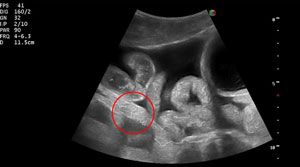
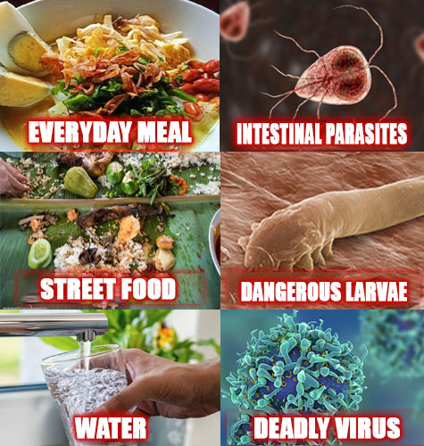
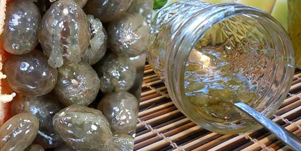
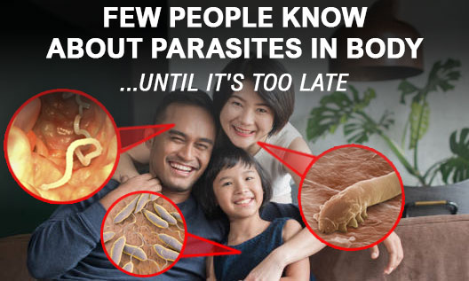
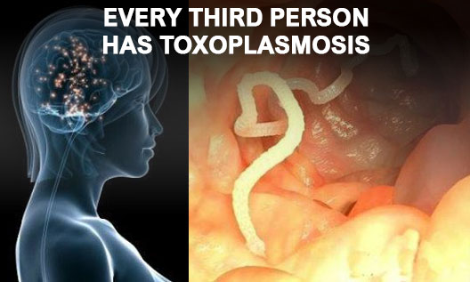
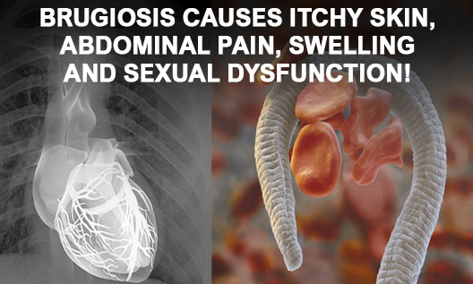
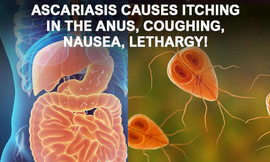
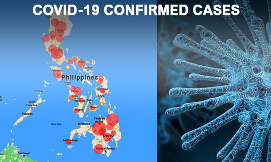

Alisha Wuckert from Manila,
shares a really shocking case happened to her family. Her whole life changed completely.
Doctors warns: Over 83.7% of Philippines are infected with dangerous parasites and viruses without even knowing about it! More over the number of people infected with COVID-19 in the Philippines is growing every day! It can happen to anyone even you. Please, take care of yourself and your loved ones.
'Hello, everybody. I’m Alisha.
Do you know this terrible feeling when your loved one suffers from an unknown disease and you cannot help? Unfortunately, me and my family had to go through this terrible experience. Now I beg you to read my story and not repeat my mistakes! You still have a chance to save you family!
John and I have been living together for 14 years, and during that time we never quarrel. Our friends still call us "newlyweds". We had many plans ahead. And of course we had thought that nothing bad would happen.
It all started when my husband started complaining of BAD BREATH. I also noticed that his mouth smells really bad lately. It smelled of rotten eggs. It was really strange because my husband always brushed his teeth 2 or 3 times a day. He also said that he felt very tired even after waking up. Any work took him a lot of energy and he quickly got tired.
In addition, he suffered from headaches and digestive problems. I used to work as a nurse in a hospital. So I advised my husband to visit a doctor. But doctor didn't found any problems. He was confused.
In few days, other worrying symptoms appeared.
My husband started getting flatulence, besides, he did not eat well and was very thin. Black circles appeared under his eyes and he looked very tired.
John complained of aching pains in the heart, liver and stomach. He was given a blood test and underwent a full examination of the body, but did not reveal anything.
Time passed, but John did not get better! Sometimes the pain disappeared, but then returned again!
I am ashamed to admit, but there was another very unpleasant symptom. Our intimate life has almost stopped. One day, my husband admitted that he had problems with an erection. It was just awful! My husband has always been a strong and energetic person. But now he has completely lost interest in life and in me. John was depressed and nothing pleased him.
Only after several months of expensive examinations, the doctors gave a diagnosis - a parasitic infection.
About 67% of my husband’s body was infected with parasites. They were everywhere! I was shocked. Where could they come from? My house is always clean, I clean it 2-3 times a week. I buy only quality products and always clean them. I could not believe that all these symptoms were signs of a parasitic infection!
I kept thinking, HOW COULD THIS HAPPEN? So, I took my husband's test and wrote a letter to the Clinic of Parasitic Infections, USA. They sent me a shocking reply:

"All your husband's problems are the first symptom of a parasitic infection.
When infected by parasites, the body begins to slowly collapse, at first it is not clear, then it is clear. It all starts with bad breath in the mouth, flatulence, depression, headache, dark circles under the eyes, poor appetite, joint and muscle pain.
For men, parasites cause prostatitis, impotence, dysfunction heart and liver disease.
For women, parasites cause vaginitis, ovary swelling, urocystitis, ovarian fibroids development, polycystic ovary tumors, swelling of the kidneys, urinary tract and kidneys and also skin aging.
For children, parasites cause acnes, eyes are always watery.
Mostly ignoring such mild symptoms lead to the rotting internal organs leading to death".
850,000 people in Philippines die each year without realizing that the cause of their death is parasites. Invisible killers are everywhere, in fish, meat, water, vegetables, fruits that people buy in supermarkets or markets.
I began to find a solution. I almost went crazy because I could not calmly watch the person that I loved suffering right in front of my eyes. I almost did not sleep, read dozens of books, sought advice from colleagues. We tried dozens of drugs with nothing useful and the doctor could not do anything. His condition deteriorated. I found myself useless and blamed myself for not being able to save him.
We even tried alternative medicine such as papaya seeds and lime potion! But it didn't work at all!
In addition to the disease, we had another problem: our money was almost over. My husband could not work due to illness, but I had to look after him. We could not afford the expensive treatment that was offered to us in the hospital. Doctors needed 610,000 php to treat my husband! That was too much money for us! The chances of salvation faded every day.
When I thought everything was useless, I found something on the internet - Ecositin.
I found studies of this medicine. It said that more than 250,000 people tested it. And within two days they removed about 300 different types of parasites.
At first, I was quite suspicious, but my husband's condition didn't get better so I decided to act. The product arrived within a day.
In the morning, I gave my husband 2 capsules of Ecositin. By afternoon, John began to feel much better. At first, he had an appetite and began to eat better. There was no rotting odor from his mouth! I was really surprised that Ecositin worked so effective and fast!
After a day, the liver and intestines have worked back to 65%, the kidneys and heartbeats work normally. After 3 days, my husband told me that, when there was no one in the room, he had an erection. Natural ingredients found in Ecositin (Elephantopus scaber, Centaurea cyanus and carnation extracts) are active in tissue regeneration, so that treatment is faster.
After 5 days, my husband was tested again in hospital. There were no signs of parasites in the body. Ecositin has washed out all parasite eggs and other things that harm the body in a just few hours. Thanks to the accumulation effect, Ecositin strengthens the immune system and protects cells from parasites. This helps avoid the possibility of being infected again for long periods of time. A week later, my husband completely recovered.
Later, I understood why I did not find Ecositin in the pharmacy. The reason is because this product is new and extremely effective (we tried it). Manufacturer fears that price will increases and fake products. Therefore, the product can only be purchased at the manufacturer's site.
I hope you will not make my mistakes! If only I immediately noticed disturbing symptoms (flatulence, bad breath in the mouth, poor erection or fever), then my husband would not have suffered for so long.
A month after this terrible incident with my husband, I was told an even more terrifying story. My good friend's uncle died recently of parasites. Doctors couldn't help him. The first symptom was bad breath! It hurts me so much because I could help this kind person if I knew earlier about Ecositin!
Now my whole family take Ecositin to prevent parasites and viruses, especially children. It is completely safe.'
Alisha Wuckert. Local cafe waiter. Wife and mother of two. Manila. 2020
Are you totally sure there are no dangerous parasites in your body or your loved once?
Even now, there are probably hundreds or even thousands of parasites in your body!
Parasites can be completely invisible. You may not notice them for years!
However, their presence can be determined by some signs.
The first sings of parasites in your body. Please check the list:
- Bad breath
- Allergy (rash, lacrimation, nasal discharge)
- Papilomas and warts
- Blurred vision
- Frequent flu, sore throat, stuffy nose
- Constant fatigue, drowsiness, depression
- Frequent headaches, bloating, constipation or diarrhea
- Joint pain, muscle pain
- Itching in the anus
- Dark circles under eyes
- Teeth grinding in sleep
"If you have at least two of these signs, then your body is infected with parasites with a 97% probability!"
says the Leading Specialist at the Center for Parasitology and Infectious Diseases of ManilaProf. Kamren Berge.
Professor, what would you recommend to our readers to get rid of parasites?
"I strongly recommend Ecositin to all Filipinos. Especially over 30 years old. For this group of people, parasites and viruses are deadly. Me and my whole family take Ecositin every month for disease prevention.
I will never save money on the health of my children. Every day in my clinic I see how people die from the most common parasitic infections that could be easily cured with Ecositin at home.
Believe me, the cost of this remedy cannot be compared with the cost of health. Moreover, now Ecositin can be ordered at a huge discount!"
Often parasites lead to fatal diseases. In the brain, it can cause brain cancer!
Parasites in the heart - can stop your heart! In the intestines - a strong intoxication of the body.
Thousands of people spend years to get rid of bad breath. They waste a lot of money, time and health. But the treatment doesn't work. Only a few people know that the main cause of bad breath is parasites in the digestive system!
The number of confirmed cases of COVID-19 infection has been on the rise in the Philippines recently.
More than 255 700 people are infected now. Parasites spread dangerous viruses, including deadly coronavirus COVID-19.
If you value your health and your loved ones and want to protect from a deadly disease, then immediately start a course of treatment with Ecositin!
Ecositin not only immediately treats symptoms of the parasite infection, but also prevents parasites appearance!
Recent research shows that Ecositin is very effective against chinese coronavirus 2019-nCoV too! Do not wait until all symptoms appear. Act now!
